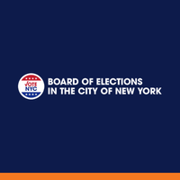
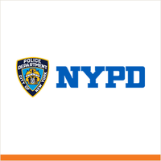
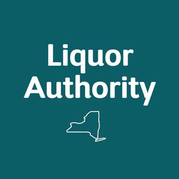
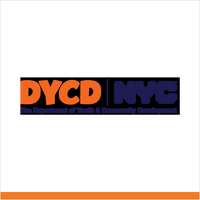
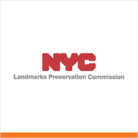
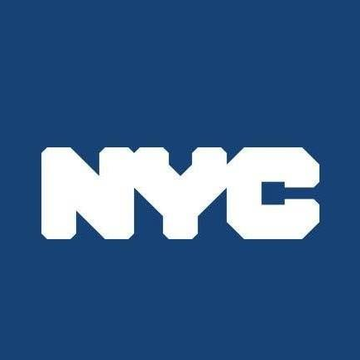
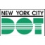

Community boards are the official, independent, and advisory bodies of New York City Government. There are 59 across NYC: 18 in Brooklyn, 14 in Queens, 12 in Manhattan, 12 in the Bronx, and 3 in Staten Island. They vote on issues across policy areas such as land use (first stop in ULURP), landmarks, liquor licenses, transportation, and budgets (past votes and minutes). Members are appointed by the borough president (half) and the city council members overlapping with the community district.
This app focuses on Brooklyn Community Board 6 (CB6), which encompasses the neighborhoods of Park Slope, Carroll Gardens, Cobble Hill, the Columbia Waterfront, Red Hook, and Gowanus. Please note that the numbers start over in every borough, so there is a CB6 in Manhattan, Queens, and the Bronx.
But like I said, this app focuses on Brooklyn’s 6th community district, but we have apps that go beyond those boundaries if you're interested.
Mike Racioppo
The district
 City Council
City Council State Assembly
State Assembly State Senate
State Senate Congress
Congress Subway
Subway Citi Bike
Citi Bike NYC Ferry
NYC FerryTurn layers on and off. Tap an official's logo or a board's seal for its page. Zoning and land use lot by lot are on the land use map.


Around you
Who represents CB6 Block cards: parking, trash, poll site, subway for any block
Block cards: parking, trash, poll site, subway for any block Parks, playgrounds, fields and courts
Parks, playgrounds, fields and courts 311, crime, tickets and permitsTransportation: streets, transit, bikes, Vision Zero
311, crime, tickets and permitsTransportation: streets, transit, bikes, Vision Zero Weather, flood maps and alerts
Weather, flood maps and alerts
Safety and alerts: NYPD, FDNY, DSNY, 311, weatherServices and business
 Healthcare and social servicesSchools, libraries, childcare and other facilitiesBusiness directory
Healthcare and social servicesSchools, libraries, childcare and other facilitiesBusiness directory
Liquor licenses
Jobs and fundingLand use and government
 Zoning and land use review
Zoning and land use review
Permits, buildings and landmarks Housing: renting in CB6, NYCHA, every building
Housing: renting in CB6, NYCHA, every building
City and state budgetsThe NYC City CharterGovernment org chartsGovernment directoryProjects and plans
Gowanus rezoningBrooklyn Marine Terminal
The BQE Brooklyn Comprehensive PlanFair Housing Growth Strategy
Brooklyn Comprehensive PlanFair Housing Growth StrategyElections and voting
Meetings and the calendar
Opens inside the app. Open the page on its own ↗
Land Use & Landmarks
CB6 has 6 historic districts. The Landmarks & Land Use Committee reviews all Certificate of Appropriateness applications before they go to LPC.
An NYC Historic District is a defined area designated by the Landmarks Preservation Commission for its architectural, cultural, or historic significance. Places like large parts of Park Slope and Cobble Hill reflect distinct periods of the city's history, and exterior changes generally require LPC approval to preserve that character. A good rule of thumb is to check the street signs: brown with white lettering usually means you are in a historic district, while green with white lettering usually means you are not. In Brooklyn Community Board 6, that often means we are part of the review process for applications seeking LPC approval, including Certificates of Appropriateness for proposed changes to landmarked properties.
Required for any exterior work on a landmarked building or property in a historic district.
- Application: Owner submits drawings, photos, and material samples to LPC.
- CB6 Review: Landmarks & Land Use Committee reviews and recommends. Full board votes. Advisory, but part of the official record.
- LPC Public Hearing: Presented to all 11 commissioners. Public may testify.
- Commission Vote: Approve, modify, or deny.
- Permit Issued: If approved, work can proceed.
Opens inside the app. Open the page on its own ↗
Land use
CB6 mapZoning and land use review Every lot: zoning, owner, what is builtHousingLand use and zoning chartsGlossary
Every lot: zoning, owner, what is builtHousingLand use and zoning chartsGlossaryProjects
Organizations
Opens inside the app. Open the page on its own ↗
Jobs and funding
Opens inside the app. Open the page on its own ↗
The Board
Opens inside the app. Open the page on its own ↗